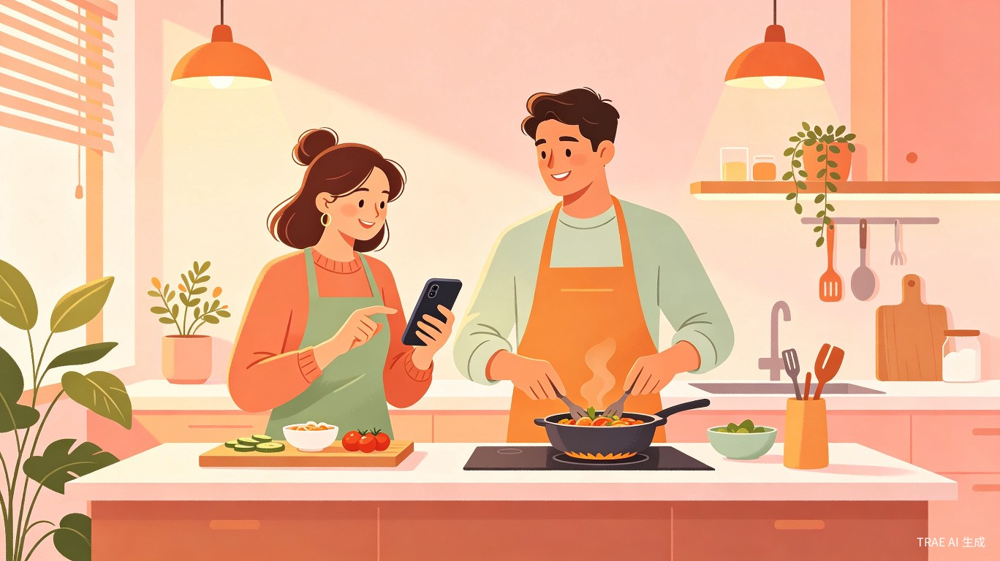
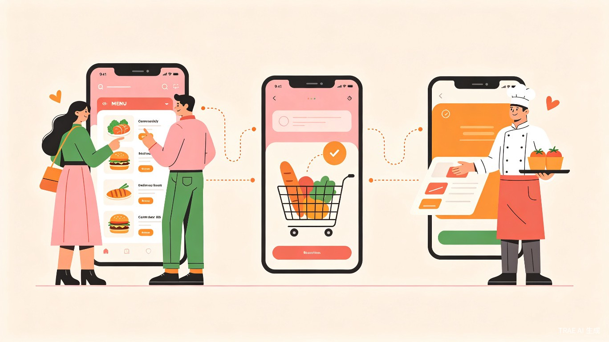
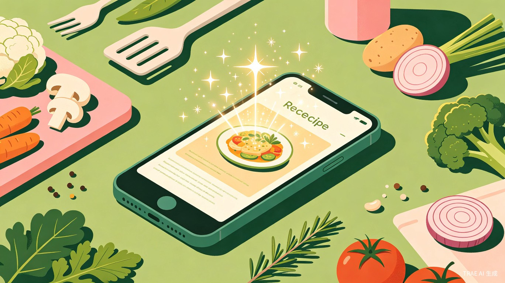

创意名称与介绍
爱心厨房是一款专为情侣设计的餐饮点餐微信小程序，创新性地引入了「吃饭」和「做饭」双角色系统。一方可以浏览菜品、下单点餐，另一方负责接单、烹饪出品，让日常饮食成为情侣间甜蜜互动的纽带。
我们希望解决的核心问题是：情侣在日常饮食场景中缺乏互动和仪式感。现有的点餐应用只关注效率，忽略了美食背后的情感价值。爱心厨房将点餐行为转化为情侣间的互动游戏，让「吃什么」变成「我们一起做什么」。
灵感来源于真实生活：很多情侣因为「不知道吃什么」而产生分歧，做饭的一方不知道对方想吃什么，吃饭的一方也不知道今天有什么可选。爱心厨房通过双角色联动，让点餐变成一种双向奔赴的浪漫。
产品形态
基于 uni-app + Vue 3 + Pinia 构建的微信小程序，支持跨端扩展（支付宝、百度、头条小程序已配置）。主色调采用温暖的绿色（#07C160），传递健康、自然的饮食理念。
目标用户及痛点
核心用户群体
- 👩❤️👨 恋爱中的情侣/夫妻：希望在日常饮食中增加互动和仪式感的伴侣
- 👨🍳 一方爱做饭的情侣：做饭方希望了解对方口味偏好，提升烹饪成就感
- 📱 年轻用户群体：18-35岁，习惯使用微信小程序，追求生活品质
使用场景
- 🏠 家庭日常用餐：在家做饭时，一方点菜一方做菜，形成默契配合
- 💰 纪念日/特殊日子：通过纪念日管理、积分赠送等功能，赋予饮食更多情感意义
- 📝 日常任务互动：通过任务系统发布「今天想吃XX」，增加情侣日常互动趣味
当前痛点
「不知道吃什么」
情侣每天面临选择困难，缺乏个性化的菜品推荐和灵感
互动缺失
现有外卖/点餐应用只关注交易效率，没有情侣间的互动机制
做饭缺乏灵感
做饭方不知道对方想吃什么，也不知道新菜怎么做，缺乏AI辅助
核心功能
🍝 吃饭角色
- ✔ 浏览菜品分类与详情
- ✔ 加入购物车、规格选择
- ✔ 下单、支付、评价
- ✔ 查看订单状态
- ✔ 收藏菜品、使用优惠券
- ✔ 发布心愿单
🍳 做饭角色
- ✔ 菜单管理（增删改查）
- ✔ 分类管理
- ✔ 接单、菜品出品
- ✔ 订单管理与状态追踪
- ✔ 积分赠送
- ✔ AI 生成菜谱
特色功能
AI 菜谱生成
通过 SSE 流式请求，AI 实时生成个性化菜谱。输入食材或口味偏好，即可获得专属菜谱方案
情侣系统
情侣绑定、纪念日管理、纪念册（AI 摘要生成）、积分赠送、心愿单，全方位记录甜蜜
任务系统
发布、接受、完成日常任务，情侣间的趣味互动，让饮食更有仪式感
积分与优惠券
积分中心、积分赠送（做饭方到吃饭方）、优惠券系统，增加使用粘性

AI 菜谱中心
爱心厨房的 AI 菜谱功能是产品的重要差异化亮点。用户只需描述想要的口味或手头食材，AI 就会通过 SSE 流式接口实时生成个性化菜谱，包含食材清单、步骤说明和烹饪技巧。
- 🤖 智能生成：基于用户口味偏好、历史订单和食材输入，AI 实时生成菜谱
- 📄 菜谱管理：支持菜谱浏览、详情查看、编辑创建、我的菜谱和收藏管理
- 🔄 流式体验：采用 SSE 流式请求，用户可实时看到菜谱生成过程，体验流畅自然

技术架构
项目规模
价值与意义
💓 情感价值 — 让美食成为爱的载体
爱心厨房将日常饮食从「解决温饱」升级为「情感互动」。通过双角色系统、纪念日管理、积分赠送等功能，让每一餐都充满仪式感。做饭方通过精心准备菜品表达爱意，吃饭方通过评价和心愿单传递期待，形成正向的情感循环。
🚀 效率价值 — AI 赋能解决选择困难
AI 菜谱生成功能解决了「不知道吃什么」和「不知道怎么做」的双重痛点。基于 SSE 流式交互，用户可以实时参与菜谱创作过程，获得个性化的烹饪方案。任务系统和心愿单让沟通更高效，减少情侣间因饮食选择产生的摩擦。
🌐 社会价值 — 倡导健康家庭饮食
通过鼓励在家做饭、菜谱分享和健康饮食推荐，爱心厨房倡导回归家庭厨房的生活方式。情侣间的互动做饭有助于增进感情、培养健康饮食习惯，对提升家庭幸福感具有积极意义。